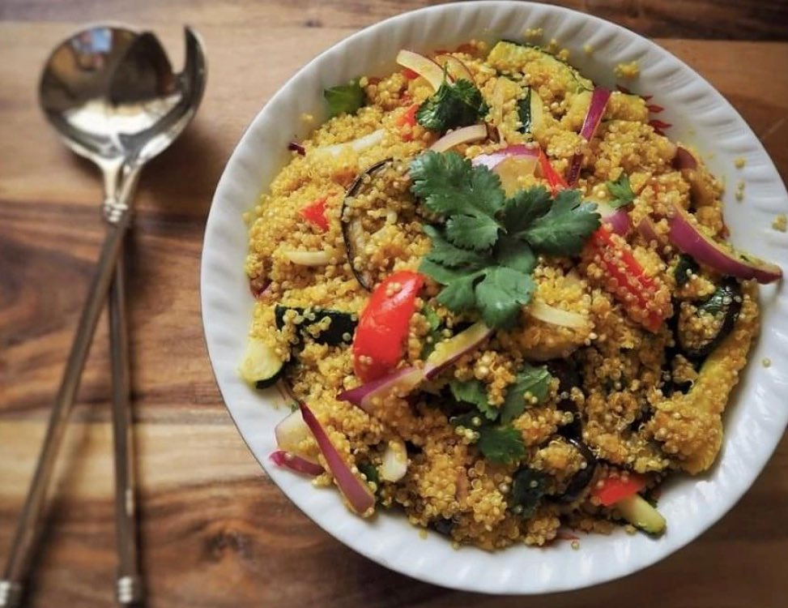

Vegetariánsky šalát podľa @esencialneoleje_darzeme — Normy Jedál
Tento výdatný vegánsky šalát má osviežujúce limetkové nakopnutie, do ktorého sa zamiluješ!
.
.
Ak si to chceš ešte vylepšiť, skús si pridať čierne olivy, kozí syr alebo tuniaka.
.
.
Quinoa avokádový šalát
(4 porcie)
● 3 lyžice limetkovej šťavy
● 2 lyžice olivového alebo avokádového oleja
● ¾ lyžičky cesnakového prášku
● ½ lyžičky morskej soli
● ¼ lyžičky mletého korenia
● 3 šálky (555 g), uvarené quinoa, chladené
● 2 stredne avokáda, nasekané
● 1 šálka (200 g) koktailových paradajok na rozkrájať na polovicu
● 1 šálka (150 g) nakrájanej uhorky
● ½ šálky (25 g) nasekaného koriandra
● mladú cibuľku nakrájať
.
.
Postup:
Vymixovať limetkovú šťavu, cesnakový prášok, olej, soľ a peper v strednej miske. Primiešaj do quinoi, avokáda, paradajok, uhoriek, koriandra a škorice.
.
.
Pochutnaj si, alebo odlož do chladničky a podávaj za studena.
.
.
#esencialneolejedarzeme #zdravie #chutnerecepty #chutnyrecept #žena #ženy #rodina #fitslovenky #fitslovenka #mojezdravie #šalát #vegos #vegetariánský #vegetarianskysalat #mňamka #evasefcovagustafsson